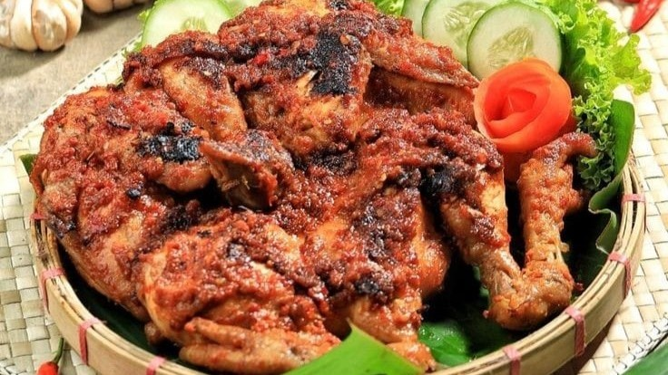

Ayam Bakar
Bahan
- 600 gr ayam
- 1 bh jeruk nipis
- 1/2 sdt garam
- 3 lembar daun salam
- 3 lembar daun jeruk
- 5 sdm kecap manis
- Secukupnya garam dan kaldu jamur
- 250 ml air matang
- 6 bawang merah
- 3 bawang putih
- 5 butir kemiri
- 3/4 ruas jahe
- 1 sdm gula merah sisir
Cara Membuat
- Cuci bersih daging ayam,lumuri dengan perasan air jeruk nipis dan garam. Biarkan selama 15 menit, lalu cuci bersih lagi.
- Masukkan bumbu halus kedalam wadah. Campur dengan kecap manis, merica bubuk, garam dan kaldu jamur, aduk rata.
- Masukkan ayam, aduk sampai semua tercampur rata.diamkan 1 jam agar bumbu meresap.
- Presto ayam yg sebelumnya dimasukkan daun jeruk & salam.setelah terdengar bunyi mendesis kecilkan api dan presto kurleb 15 menit.
- Siapkan pemanggang, bakar daging ayam yang sudah diolesi mentega. Bakar sampai kedua sisinya berubah warna kecoklatan, angkat, siap disajikan